Мунку-Сардык. Перевал 1С
- 19-20 апреля 2008 -
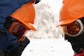
19 апреля, суббота. Даже если сноурайдеры в кои-то выходные решили просто прогуляться на Мунку-Сардык, с ледорубами, в кошках и в касках, - то все равно пойдет снег. Ну или из-за этого пойдет снег :) Так что две Светы, две подруги, по дороге от Иркутска до Култука экстрима схватили. От Култука до Монд снега было меньше, зато камней и одним пассажиром больше. Однако шустрый Runx под чутким руководством Светки-партизанки свое дело сделал практически без потерь. Теперь под вечер осталась самая малость - пройти от моста по замерзшему Белому Иркуту до первой морены, поставить палатку, сварить ужин, принять для сугреву, переночевать и не замерзнуть к утру.
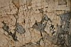
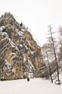
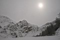
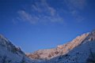
20 апреля, воскресенье. Морозно. Каждый утром вылезал из палатки и увидев чистое небо и горы в малиновом снегу, восклицал "Красота-то какая!". И только эхо привычно отзывалось "... ать! ... ать! ...ать!" :) Не, ну правда, после вчерашней серости новый день обещался быть обжигающе солнечным. Так что все намазали лицо чем надо, одели на глаза что надо, затарили рюкзаки чем надо и двинули, в надежде на долгий путь к вершине горы Мунку-Сардык (3491м). Однако, надежда умирает последней. Апрель в этом районе отличается малым количеством туристов, и потому тропы далеко не слоновьи, а даже наоборот - отсутствуют напрочь. Ну и на подъеме перед озером как-то ушли налево. Экскурсоводы из нас хреновые, имейте в виду :) Света Ку это нам сразу сказала, и пошла обратно в лагерь. А вот из Светы Ко может получиться хороший первопроходец, так что перевал, на который она первая вышла, я бы так и назвал - "1С". Очень хороший перевал, сходите на него обязательно, очень красивый вид открывается - ледник и вершина слева вверху, а озеро справа внизу, сзади скала, а впереди внизу - крутой каменюжник. Мы конечно ожидали озеро увидеть перед собой и привычным маршрутом пойти на вершину, а тут ТАКОЕ! От неожиданности пошли обратно.. Хватит на сегодня сюрпризов, и так прогулялись нормально, чуть руки не отморозили.
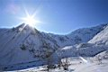
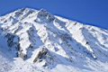
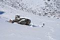
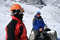
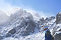
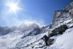
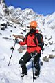
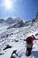
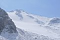

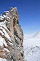
Вернулись к лагерю, подумали и решили сегодня же обратно ехать. Поужинали, собрали вещи и сказали: "Спасибо, Мунку-Сардык, как-нибудь в другой раз. До встречи!" :)
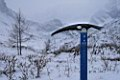
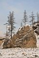
МАЙ 2008
Фото-отчет от Лёхи Слюдянского